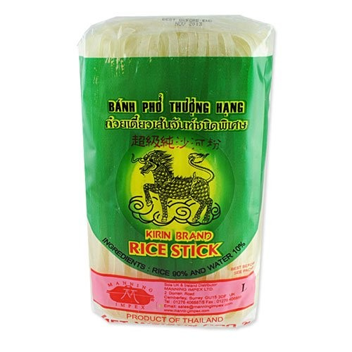
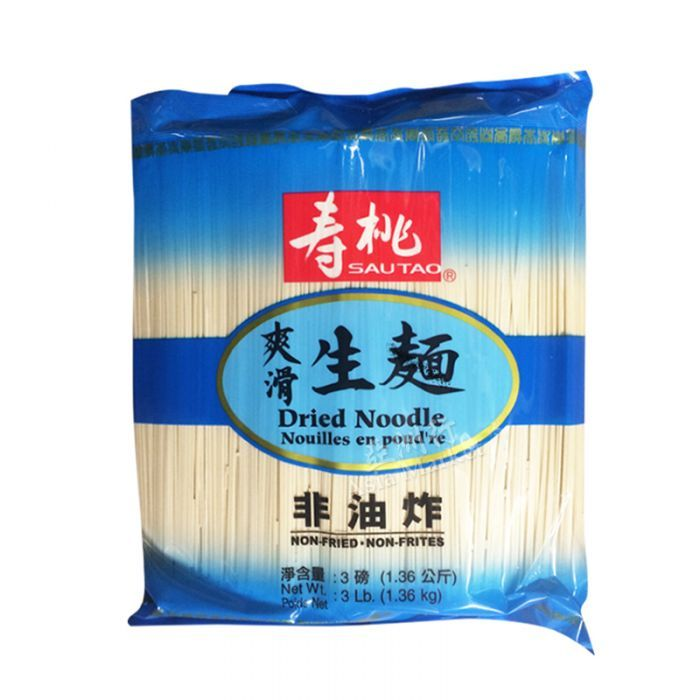

spicy cold noodles
chewy salad for sticky days.
- thick rice noodles
- light soy

- laoganma

- sesame oil

- spring onion
- cucumber
- coriander
- sesame seeds (optional)
- bring a pan of water to the boil, and add the noodles. I like to use the thick rice noodles as they're satisfyingly chewy, but this dish works equally well with the thinner chinese wheat noodles  (though if you're having this as a packed lunch, they can get a bit sticky during a day in the fridge). In an ideal world this is made with hand-pulled noodles (chewy and wheaty), but that's a lot of effort. Don't overcook them: you want them to still have some bounce. After draining them, rinse well with cold water, until they're cool.
- slice the cucumber lengthways into very thin strips with a sharp knife. finely chop the coriander and spring onions, and mix with the noodles. dress with sesame oil, laoganma and light soy, and mix well. sprinkle with sesame seeds.
 , bean sprouts, or toasted peanuts.
, bean sprouts, or toasted peanuts.